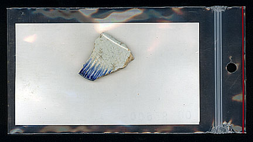

|
|
|
The Field Specimen Card The 3" x 5" plastic zip-lock bag and Specimen Card shown above provides one example of the way in which specimens are individually documented in the field. The Field Specimen Number, Catalog Number, Unit, Level, Objective, Material Type, Description, Date Recovered, and Excavator are all crucial bits of information for identifying the specimens and their provenience. |
|  |
|
The Artifact or Specimen When "diagnostic" or important bits of cultural information, such as ceramics and other potentially datable material are encountered, all efforts to properly record the exact (or "In Situ") location of the artifact within the individual unit should be attempted. When not available, basic level information and associations should be carefully recorded. Note: Proper placement of the artifact is as shown with primary design visible to exterior. |